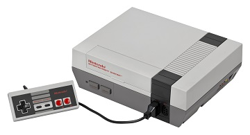

8/26/2022 – Nintendo Entertainment System
The retro bug really does get to you and you start wanting to branch out to other systems that perhaps you never had for example the NES and others.

Even though I never had an NES back in the day I feel a strong connection to them as I played the NES w/ family and friends in the 90's quite a bit.
I played the NES on several trips to my sisters house w/ my nieces and nephews who had one.
And I played quite often w/ a couple friends I had. One was a neighbor in the apartments I lived in and he would bring his NES over to my apartment and we would play for hours.
At another time I would go over to a friends house and would play his NES quite a few times. I just wasn't a big enough gamer at the time to go out and buy my own even though I could have afforded one fairly easily around that time.
I am more interested in the NES now than I was back then. I am especially interested in the hardware capabilities and compare them to the CoCo3. Can a stock CoCo3 run the typical NES game?
Where the NES has quite extensive video and sound hardware helping it out the CoCo3 has just the 6809 CPU w/ the GIME video frame buffer (with some hardware scrolling) and a 6 bit DAC for sound.
There are a TON of NES informational sites: here are just a few I like -- NesHacker | Displaced Gamers | NesDev.org
I want to cover the NES console on this site and cover how difficult (or simple) it may be to port some games from the NES to the CoCo3.
6/14/2022 – FPGA -vs- Software Emulation
This question comes up quite often, especially in the MiSTer Facebook group.
The biggest difference between the two really boils down to emulation fidelity. Typically a software emulator attempts to approximate a system as close as possible whereas an FPGA emulation attempts to create a precise reproduction of a system.
The difference between the two can become blurry in some circumstances, and there can be a fine-line between them under certain conditions.
When we use the term emulator (and we really mean software emulator) we are usually talking about the plethora of emulators out there that run on one of the 3 main operating systems; Windows, Linux, or MacOS. And this is the software emulation this article is referring to.
There are some software emulations that are designed to be as precise as an FPGA emulation. These are not run under any operating system at all but instead are written to run on bare metal. For example Emu68 on the PiStorm. In essence FPGA does not have a performance advantage over these and instead is possibly at a disadvantage due to raw clock speed. These are not the software emulators we are talking about.
So what creates a high-fidelity emulation? Emulating at the hardware clock level. It’s all about how precise the timing is. A software emulator running under any of the main OS’s is at the mercy of the OS for its timing. These main OS’s are not real-time so therefore you are never guaranteed that something will happen at precisely an exact interval. Even at 60 times a second (which is a common video refresh rate), or every 0.016667 of a second (16.6666667 milliseconds) your going to have some slop. Whereas an FPGA is working at a hardware digital level where you use clocks for exact timing w/ no slop whatsoever. 60Hz is just one example. There are other timings like the CPU clock and sound chip clocks, etc...
So timing is really the #1 difference between software and FPGA emulation. And reading the controllers / joysticks and updating the video screen are the two most noticeable areas for lag (or other imprecise timming) when it comes to software emulators.
We can generalize too by saying that typically a software emulator is cutting corners and presenting an output to the user that attempts to match that of the system. Usually it’s not emulating internal processes that would go unnoticed in the output. Whereas an FPGA re-creation attempts to reproduce the actual circuits that make a system, usually from a schematic of the system or from reverse engineering the system. I would go as far to say that software emulators are actually “simulators”. But that is the topic for another blog.
In summary, software emulation can be good enough or even very good but hardly perfect. Some of MAME’s emulations are very, very good rivaling that of the MiSTer. But FPGA if done right, can be the closest thing you can get a clone/replica of a system, with the behavior matching cycle by cycle, pixel by pixel exactly as the system would.
6/4/2022 – Is FPGA Emulation?
Before we get into FPGA -vs- Software Emulation we need to talk about whether or not FPGA is emulation when re-creating a system. If the device is truly a “clone” of another device it's re-creating and 100% compatible with it, then I am going to say NO, it's not emulation. Back in the day (and still today for that matter) we had PC clones – not PC Emulators.
Here is the way I see it, take a CoCo3 motherboard, now re-create that motherboard using FPGA technology and recreate the analogue circuits with compatible parts such as D/A (sound) or op-amps (I think there are some on the CoCo3? For argument sake pretend it does if it doesn't), etc... and place the same I/O connections such as the cartridge port, joysticks port, cassette port, serial port, composite and RGB video output etc. Now you can take all your old cartridges the MPI, disk-drive controllers, printers, joysticks CM8 monitor, and boot DECB and it runs identical to a CoCo3. What you have is a CoCo3 “clone” not an emulation. EVEN if you have added improvements, faster CPU, more graphic modes, etc… as long as it remains backward 100% hardware and software compatible it is for all practical purposes a modern day CoCo3.
Same thing goes for a PC motherboard. Recreate a PC motherboard using one of the standard sizes w/ standard power connectors with all the standard connections to the outside world, PCI slots, SATA, USB, etc... re-create everything else in an FPGA, including the CPU, chipset etc … if it is backwards compatible w/ say a 386 or 486, you have a PC clone, not an emulator.
Now take the DE10-Nano w/ the current MiSTer I/O boards, or take the CoCo3FPGA that runs on a Terasic DE1 (I would say even w/ the Analogue Board) these are Hardware Emulators. They are not cloning the entire system. I can't plug an MPI into the CoCo3FPGA or MiSTer running a CoCo3 core. Granted, some of these are a close call. Some of the arcades and others on the MiSTer are virtually indistinguishable with the real thing, nonetheless – I still say they are emulating, and not a an actual clone.
There is a gray area where some things could be referred to as either. There is a fine-line where something is an emulation versus being a clone (or a re-creation).
I am going to say though that most of the time when we are talking about FPGA recreations of retro systems we are in fact talking about hardware emulation and not clones. Because they generally "emulate" the I/O devices of the original system. The MIST, the MiSTer, the CoCo3FPGA, Roger's Matchbox CoCo and others are indeed hardware emulators.
Some commercial offerings might actually be closer to being clones, however since I have not researched them or owned one, I am not going to opine on them.
6/1/2022 – FPGA's: what are they? (Hint: they are NOT software)
FPGA's stands for Field Programmable Gate Array. They are in essence (re-)configurable digital logic chips. To use an FPGA you design a “digital logic circuit” and then you upload that circuit to the FPGA chip. Therefore to fully understand what they are you must first understand what a digital circuit is.
Configuring an FPGA device is sometimes referred to as “FPGA programming”. You see that term used everywhere; in articles, on book covers, etc. That is somewhat of a misnomer since the term programming has long been established to refer to programming a computer CPU w/ software. It is NOT the same thing as programming a CPU or a microcontroller. However since configuring a FPGA with a digital circuit using source code looks a lot like software programming and the process of uploading a circuit closely resembles compiling and running a software program, then the term has stuck. I even use the term myself. But for end users of the technology it can be confusing.
What can you do with a FPGA? You can do anything that can be done w/ a digital circuit. You can create dedicated circuit like a signal or digital image processor that performs many computations in parallel, or you can create a custom CPU or re-create the functionality of outdated and difficult to find hardware, such as retro computers, consoles or arcade games -- hence the primary use for us hobbyists.
FPGA's are a blank slate, they are like Legos for digital electronics. They are indeed programmable hardware in the sense that you can program any digital circuit into them and they become that circuit.
FPGA's are configured using one of the HDL languages. The two industry standard ones are Verilog and VHDL. These are the languages that the tools for configuring an FPGA use. And the two most popular FPGA vendors are Intel (used to be Altera) and Xilinx. There are some higher abstraction HDL languages that then get converted to Verilog or VHDL. The two I am familiar with are MyHDL and Chisel.
5/30/2022 – Ideas! (updated: 7/2/2022)
These are some ideas and plans for future blog entries.
- About Me -- in English and Portuguese
My First CoCo- CMOC Programming on the CoCo
- MC6809 / HD6309 Assembly Language Programming
- How to Run/Configure MAME for CoCo Emulation
- I once owned an Apple IIe (clone)
My nostalgia for the NES- I once owned a GameBoy
- My (perceived) connection to the MSX computers
- Enjoying the hobby w/ Real Hardware and/or FPGA/Software Emulation or primarily Collecting.
FPGA's: what are they?Is FPGA Emulation?FPGA -vs- Software Emulation- Simulation -vs- Emulation
- Learning FPGA/HDL Series
- Learning Electronics Series
- The CoCo Extension BUS
- Using KiCAD
- Using FreeCAD
- The Case for Open-Source
- When is a CoCo not a CoCo?
- The CoCo IV (or V)
- 6809 SBC's
- Z80 SBC's
- 6502 SBC's